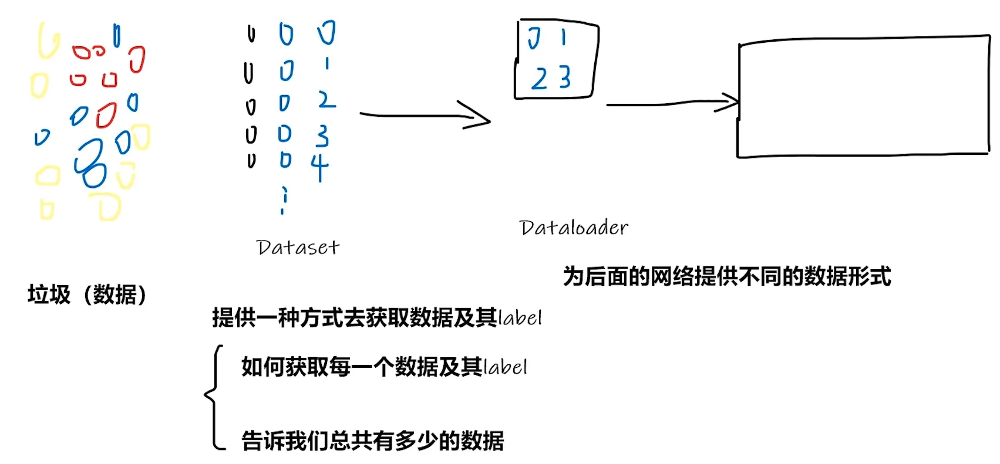
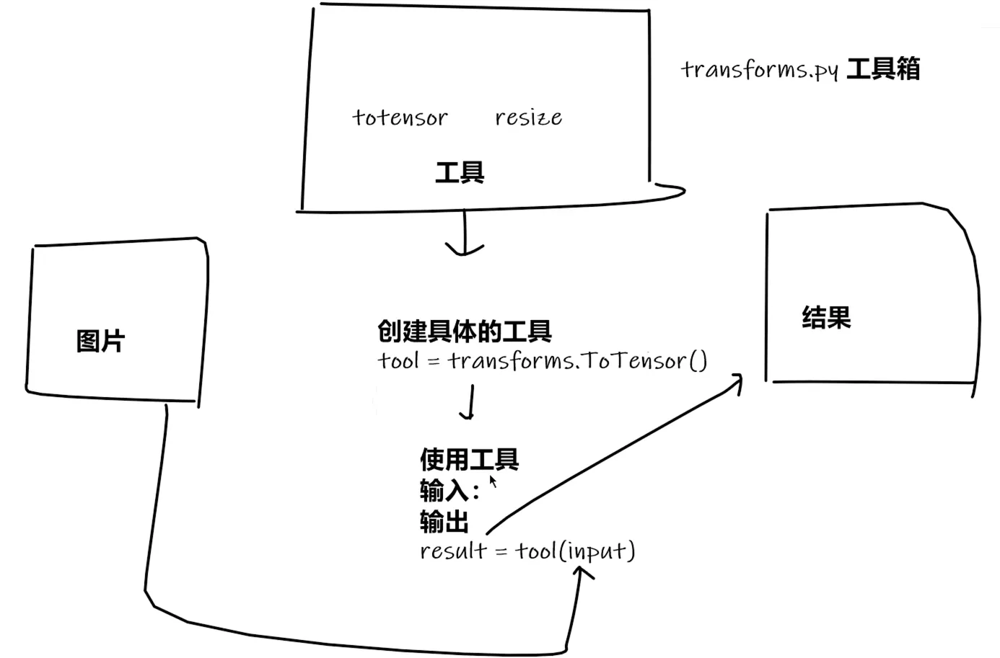
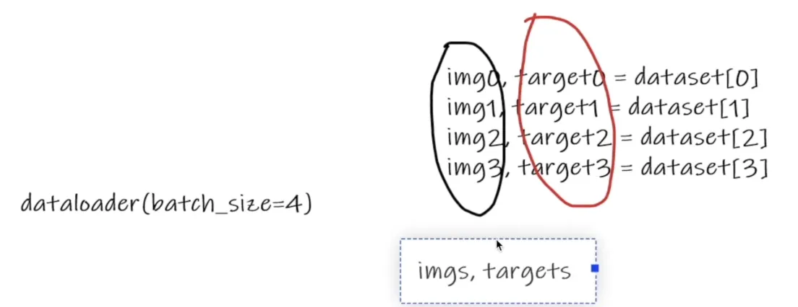

第 02 讲 数据📝
1.1 加载数据
1.1.1 Dataset
PyTorch 有关加载数据的，主要涉及 Dataset 和 DataLoader
前者主要告诉后者如何 获取数据 ，后者主要用于 加载数据和为网络提供数据

Dataset
需要继承抽象父类 \`Dataset\`
需要重写两个方法
\`__getitem__\`
\`__len__\`
read_data.py
from torch.utils.data import Dataset
from PIL import Image
import os
# 自己封装的 MyData类
class MyData(Dataset):
def __init__(self, root_dir, label_dir):
self.root_dir = root_dir
self.label_dir = label_dir
self.path = os.path.join(self.root_dir, self.label_dir)
self.img_path = os.listdir(self.path)
def __getitem__(self, idx):
img_name = self.img_path[idx]
img_item_path = os.path.join(self.root_dir, self.label_dir, img_name)
img = Image.open(img_item_path)
label = self.label_dir
return img, label
def __len__(self):
return len(self.img_path)
root_dir = "dataset/train"
ants_label_dir = "ants"
bees_label_dir = "bees"
ants_dataset = MyData(root_dir, ants_label_dir)
bees_dataset = MyData(root_dir, bees_label_dir)
# 第1种方式
print(ants_dataset[0])
# 第2种方式（根据上面返回的提示而修改）
img, label = ants_dataset[0]
img.show()
# 测试两个数据集的拼接 未改变顺序，ants在前 bees在后
train_dataset = ants_dataset + bees_dataset
print(len(ants_dataset))
print(len(bees_dataset))
print(len(train_dataset))
img, label = train_dataset[123]
img.show()
img, label = train_dataset[124]
img.show()
1.1.2 TensorBoard
我们不知道一个神经网络执行具体细节是什么，要人工调试十分困难
TensorBoard 可以将程序的执行步骤都显示出来，对训练的参数（如损失值）统计并以图展现
# 在「pytorch」环境中安装（记得关闭梯子）
pip install tensorboard
SummaryWriter类
创建一个事件文件，在给定的目录中添加摘要和事件
参数1 存放日志的文件夹名
本节视频只用到两个方法
1. add_image()
在事件文件中添加图片
2. add_scalar()
在TensorBoard中添加标量数据
该方法可以用来添加训练过程中的损失值、准确率等指标，以便于在TensorBoard中进行可视化和比较
test_tb.py
from torch.utils.tensorboard import SummaryWriter
writer = SummaryWriter("logs") ##存储到logs的文件夹
# y = 2x
# 同一个图像标题下，重复修改y值会导致，新图会包含之前的旧图(是个bug,可以通过删除logs文件再创建)
for i in range(100):
writer.add_scalar("y = 2x", 2*i, i) # 2*i y轴 i x轴
writer.close()
查看日志的命令
# logdir=事件文件所在的 文件夹名
tensorboard --logdir=logs
# 可以修改端口(原端口6006)
tensorboard --logdir=logs --port=6007
tensorboard.py
from torch.utils.tensorboard import SummaryWriter
from PIL import Image
import numpy as np
writer = SummaryWriter("logs")
# 第1步
# image_path = "data/train/ants_image/0013035.jpg"
# 第2步
image_path = "data/train/bees_image/16838648_415acd9e3f.jpg"
img_PIL = Image.open(image_path) ##获取的图像为PIL型
img_array = np.array(img_PIL) ##从numpy转换图片类型格式,转为numpy.ndarray型
print(type(img_array))
print(img_array.shape) ##查看格式为 "HWC"
# 从PIL到Numpy，需要在add_image()中指定图像的每一维
writer.add_image("test", img_array, global_step=1, dataformats="HWC")
##`global_step=1`就是告诉TensorBoard：“这张图是训练到第1步时的样子”。通过调整这个值，你能在TensorBoard中滑动查看训练过程中图像的演变。
##这里的dataformats="HWC"是格式,H代表高度,W代表宽度,C代表通道
writer.close()
1.2 转换数据
1.2.1 Transforms(一个工具箱)
Transforms 主要是用于图像变换的操作，可以对图像进行裁剪、标准化等
其包括很多常用的图像处理方法，比如 transforms.ToTensor()

为什么用 Tensor 数据类型？ Tensor 类型中的很多属性我们都需要在神经网络中用到，如反向传播、梯度等
test_tf.py
from PIL import Image
from torch.utils.tensorboard import SummaryWriter
from torchvision import transforms
img_path = "data/train/ants_image/0013035.jpg"
img = Image.open(img_path)
print(img)
# 使用transforms
> ToTensor() 可传入\`PIL Image\` 和 \`numpy.ndarray\` 两种图片格式
>
> PIL Image：即用PIL的Image工具打开图像的格式
>
> numpy.ndarray：即用OpenCV打开图像的格式（所以一般用这种方式打开，不用再转换图像了）
tensor_trans = transforms.ToTensor() ##创建tensor_trans工具
tensor_img = tensor_trans(img) ##使用tensor_trans工具将img转为Tensor型img
print(tensor_img)
# 创建tensorboard日志 可以使用tensorboard直观展示
writer = SummaryWriter("logs")
writer.add_image("Tensor_img", tensor_img, 0)
writer.close()
补充: 使用 opencv 读取图片
import cv2
cv_img = cv2.imread(img_path)
print(cv_img) ## 使用opencv读取图片,可以直接得到numpy.ndarray类型img
多关注 「输入、输出」 类型，不会的多看 「官方文档」 关注方法需要的 「参数」 ，不知道返回值的时候 「Print」打印查看
call.py 展示 Python 中 call 的用法
# __call__ 让对象可以直接当函数使用
# 测试
class Person:
def __call__(self, name):
print(" Hello "+name)
def hello(self, name):
print("Hello "+name)
person = Person()
#以下两种调用方式
person("zhangsan")## 调用的__call__
person.hello("lisi")## 调用的hello对象名
useful_tf.py 展示 transforms 的一些功能
from PIL import Image
from torch.utils.tensorboard import SummaryWriter
from torchvision import transforms
writer = SummaryWriter("logs")
img = Image.open("images/0013035.jpg")
print(img) # 打印后得知，图像为RGB三通道
# 01 transforms.ToTensor()
trans_totensor = transforms.ToTensor()
img_tensor = trans_totensor(img)
print(img_tensor[0][0][0]) ## 打印张量中第一个通道、第一行、第一列的像素值,这通常是一个介于0到1之间的浮点数
writer.add_image("ToTensor", img_tensor, 0) ## 0：全局步数(global step)，用于训练过程中跟踪不同步骤的图像
# 02 transforms.Normalize()
# 是一种归一化,目的是将数据调整到特定的范围内，使其更适合模型训练或分析
# 公式 output[channel] = (input[channel] - mean[channel]) / std[channel]
trans_norm = transforms.Normalize(mean=[0.5, 0.5, 0.5], std=[0.5, 0.5, 0.5])
## mean平均值;std标准差
## 创建了一个标准化转换器，对RGB三个通道执行：减去均值0.5 ; 除以标准差0.5
## 公式为：normalized = (input - mean) / std
img_norm = trans_norm(img_tensor) ## 输入01得到的Tensor型img
print(img_norm[0][0][0])
writer.add_image("Normalize", img_norm, 0)
# 03 Resize 用于调整图像尺寸
# 图像为PIL，经过Resize后，仍为PIL.设计初衷就是处理PIL图像，并保持相同的数据类型输出
# transforms.Resize()可以接受两种参数形式：1. 单个整数：将图像的短边缩放到该尺寸，长边按比例缩放 2. 元组(h,w)：将图像精确缩放到指定尺寸
trans_resize = transforms.Resize((512, 512))
img_resize = trans_resize(img)
# 将PIL转为Tensor
img_resize = trans_totensor(img_resize)
writer.add_image("Resize", img_resize, 0)
# 04 Compose 可以将几个转换组合在一起，先resize，再tensor
# Compose中的操作顺序必须合理
trans_resize_2 = transforms.Resize(512)
trans_compose = transforms.Compose([trans_resize_2, trans_totensor]) ##相当于合并两个过程
img_resize_2 = trans_compose(img)
writer.add_image("Resize", img_resize_2, 0)
# 05 RandomCrop 随机裁剪
trans_random = transforms.RandomCrop(512)
trans_compose_2 = transforms.Compose([trans_random, trans_totensor])
for i in range(10): ##随机裁剪十个
img_crop = trans_compose_2(img)
writer.add_image("RandomCrop", img_crop, i)
writer.close()
dataset_tf.py 展示 transform 与数据集使用
import torchvision
from torch.utils.tensorboard import SummaryWriter
dataset_transforms = torchvision.transforms.Compose
([
torchvision.transforms.ToTensor()
## 这里可以进行其他操作(比如resize等等)
])
train_set = torchvision.datasets.CIFAR10(root='./dataset',
train=True,
transform=dataset_transforms,
download=True)
test_set = torchvision.datasets.CIFAR10(root='./dataset',
train=False,
transform=dataset_transforms,
download=True)
# 01 查看一下数据信息
print(test_set[0])
## 输出 (<PIL.Image.Image image mode=RGB size=32x32 at 0x23653E11F60>, 3)
img, target = test_set[0]
print(img)
print(target) ## 标签也就是label
print(test_set.classes)
print(test_set.classes[target]) # 输出cat(对应3)
img.show()
# 02 通过tensorboard查看
writer = SummaryWriter("logs")
for i in range(10):
img, target = train_set[i]
writer.add_image("test_set", img, i)
writer.close()
查看 logs 日志
tensorboard --logdir="logs"
1.2.2 DataLoader
batch_size 取四个数据打包成 imgs.targets,相当于融合在一起

dataloader.py
import torchvision
from torch.utils.data import DataLoader
from torch.utils.tensorboard import SummaryWriter
# 准备测试集
test_data = torchvision.datasets.CIFAR10("./dataset",
train=False,
transform=torchvision.transforms.ToTensor(),
download=True)
# 加载测试集
test_loader = DataLoader(test_data,batch_size=64,shuffle=True,
num_workers=0,
drop_last=True)
## shuffle=True表示在每次遍历数据集（即每个 epoch）前，将数据顺序打乱
## num_workers=0 表示 使用主线程加载数据（加载将是同步进行的）
# 查看测试数据集中第一张图片
img, target = test_data[0]
print(img.shape)
print(target)
writer = SummaryWriter("dataloader")
for epoch in range(2): ## 遍历两轮
step = 0
for data in test_loader:
imgs, targets = data
# print(imgs.shape)
# print(targets)
writer.add_images("Epoch:{}".format(epoch),imgs,step)
step = step + 1
writer.close()